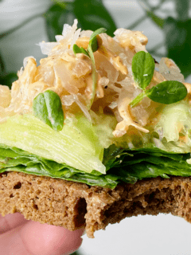
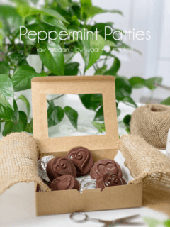

FAQ Plus vs. PrintFriendly
FAQ Plus does not play nice with PrintFriendly.

This is test question 1
This is testing to see if there is a workaround to get FAQ Plus to play nicely with PrintFriendly.
© AmieSue.com
This is test question 2
Testing to see if the problem exists with multiple FAQ Plus questions per post.
© AmieSue.com

Creating a test to see if there is a workaround.
© AmieSue.com